iNiLabs - Visitor Pass Management System
- Getting Started
- Project Info
- What is this project for?
- Features
- Installation
- Quick Start Guide
- SMTP
- Knowledge
- Settings
- Other
- Credit
- How to contact us?
Getting Started
- Created: 1/04/2019
- Version: 1.0
- Author: iNiLabs ( inilabs.net )
- Support: Online Help line Desk ( support.inilabs.net )
- Find us on Facebook
- See our tutorial videos on Youtube
What is this?
iNiLabs - Visitor Pass Management System is a system for all kind of company or business organizations. 2 Different types of sms gateway available (Twilio and african sms gateway), users can register visitors, pre-register visitors, log visitor's check-in and check-out, employee's check-in and check-out and many more..
features
Visitor Management is one of the very important aspects of security management. It helps in capturing the details about the visitors in a systematic manner and maintains a repository of the same. Visitor Management is a process of allowing visitors to enter the premises based on appointment, creation of identification badges and managing the Security staff deployment for effective control over the security.
- Ease of Use. - Smart visitor service with pre-registered , pre-visitor or can be - registered quickly, check-in, visitors are made to feel expected and welcome. - Attractive Dashboad Report with (Employees,Bookings,Visitors,Book Details etc) - Add User with differnt types information espically roles - Employee full details with Booking and Attendance Details - Add Attendance and Add Bookings with Booking Group Details - Visitor's Dynamic Information - Pre-Register Information - Settings : General, Notification, Photo & Card Id, - Email & Sms template, Email, Front-end Settings - Notifications that Match Receivers' Preferences. - Preregistration and Repeat Visitor Features. - Visitor Photo Capture. - Visitor Badge Printing. - Legal Document eSignature Capture. - Cloud-Based Visitor Logbook. - Secured Data. - Fast Processes More visitors in less time span - Appointment scheduler A centralized web-based appointment scheduler - Alerts Email/SMS and IP phone integration is available
Print badges
Beautiful sleek badges that create a safe and welcoming environment. Connect your printer and easily print any type of badge.
Send notifications
Send visitors and hosts a friendly text or email reminder before their visit, at check-in and at check out.
Impress visitors
Create a welcome that stands out by allowing your visitors to sign themselves in, while you focus on giving them a warm personal greetingVisitor Management
Makes managing visitor information a breeze. Your employees have access to the information they need, making visitor management smooth and easy.
Visitor recognition
Make your visitors feel truly welcome. Your visitor's name will be displayed on the screen as they check in and the app can remember details, like how they like their drink. They are not just any visitor
Security
Alert key people when a visitor checks in or forgets to check out, or just about a specific visit. Make visitors aware of safety and confidentiality rules, keeping your facilities and data safe.
Data protection
Your data is safe with us. It is backed up daily across multiple servers, so you can have access to it even if there is a hardware issue. It is also yours to keep. You can, at any time, retrieve all your data.
Reports
Collect data and spot trends, produce reports and use surveys to gather feedback from your visitors. All this information can be used to help you improve the visitor experience.
Installation
Before install, please make sure you have the components bellow enable on your server
PHP 7.1.3 or greater
OpenSSL PHP Extension
PDO PHP Extension
Mbstring PHP Extension
Tokenizer PHP Extension
XML PHP Extension
Ctype PHP Extension
JSON PHP Extension
BCMath PHP Extension
GD PHP Extension (or Imagick PHP Extension)
PHP Fileinfo extension
PHP Zip Archive
Rewrite Module (Apache or Nginx)
PHP.INI Requirements
open_basedir must be disabled
File and folder permissions
/bootstrap 775
/storage 775 (recursively)
Installation with Apache
Creating a new Database
First thing you want to do before installing iNiLabs VIP is to create a new database on your mysql server. If you already know how to do this/or have already created one just skip to the next step.
Your hosting provider will most likely have phpMyAdmin as mysql manager. If that is the case here is a step by step guide (if not the process will be very similar on other managers).
Login to your control panel, find and click phpMyAdmin link.
Click on the database tab in the top menu, enter any name for your database and click create.
Uploading Files
After creating a database, unzpip the file you donwloaded from CodeCanyon and upload the contents of iNiLabs VIP folder to your server root, usually /path/to/www/ or /path/to/html/ or /path/to/public_html/.
Launch the Installer
After you created a database and uploaded the files, simply open up your site in the browser (like http://yoursite.com, you will redirect to http://yoursite.com/install) and follow on-screen instructions to complete the installation.
Installation with Nginx
- Put all the iNiLabs package files to your server root, usually
/path/to/www/or/path/to/html/or/path/to/public_html/and set your server configuration like this:
root "/var/www/public";
location / {
try_files $uri $uri/ /index.php?$query_string;
}
- Then restart Nginx.
- Create a MySQL database, add user to it with full permissions.
- Go to the script's installation URL. For example
http://yoursite.com/install - And follow the web installation wizard.
Installation on localhost
-
You have to create a local virtual host by using a domain name (eg.
http://yoursite.localhost) instead of localhost (http://localhost/yoursite).
For more information, Using a domain name instead of localhost with XAMPP, WAMP or MAMP - Restart your server.
- Create a MySQL database, add user to it with full permissions.
- Go to the script's installation URL. For example
http://yoursite.localhost/install - And follow the web installation wizard.
Quick Start Guide
Front-end First Page

Check in First Step
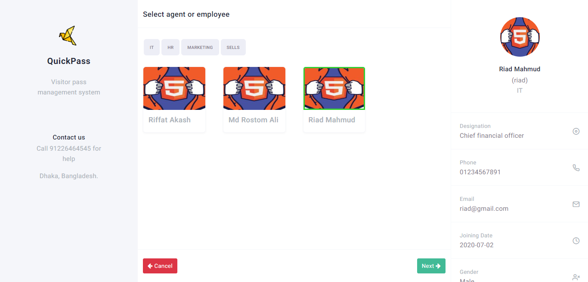Check in Second Step
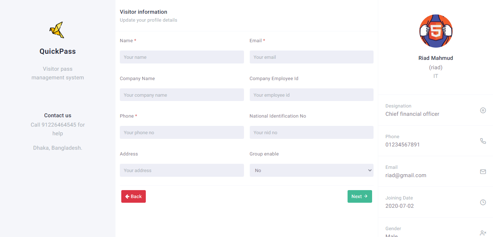Check in Third Step
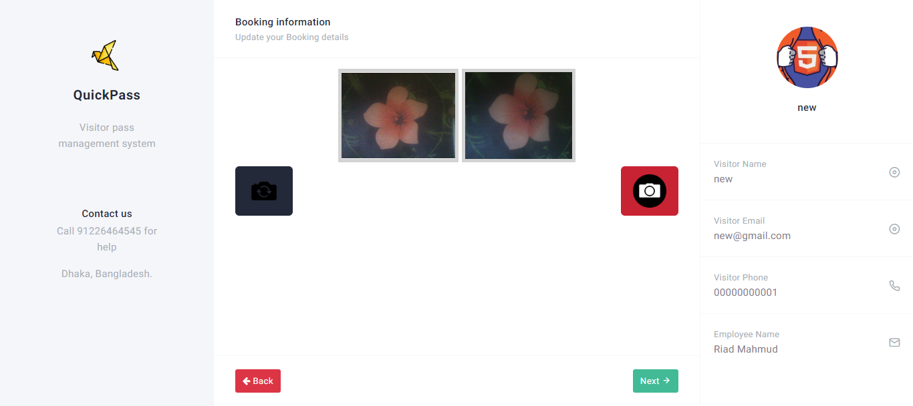Check in Forth Step
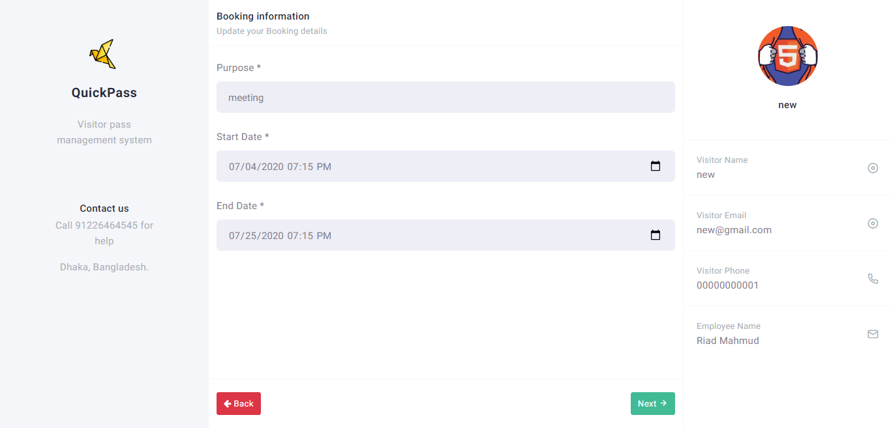Check in Final Step
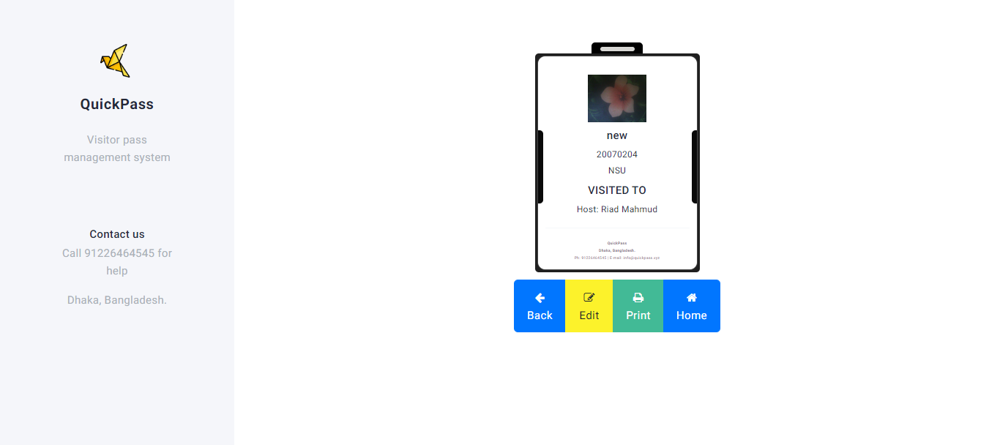Dashboard
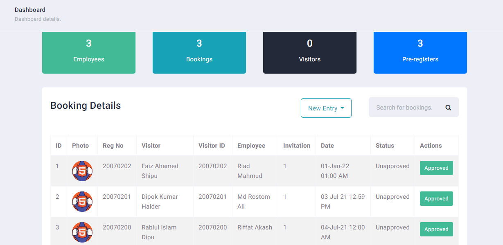Users List and details

Employees List and details
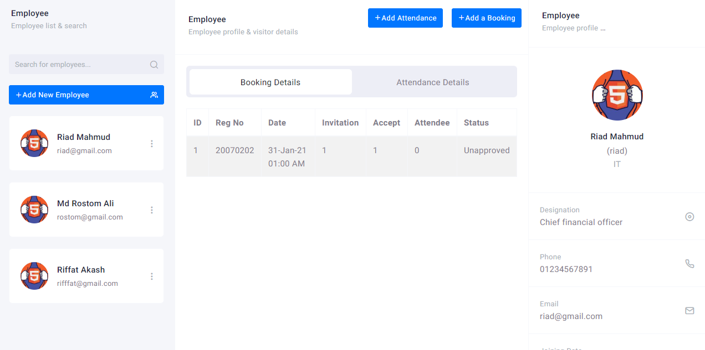Visitor List and details
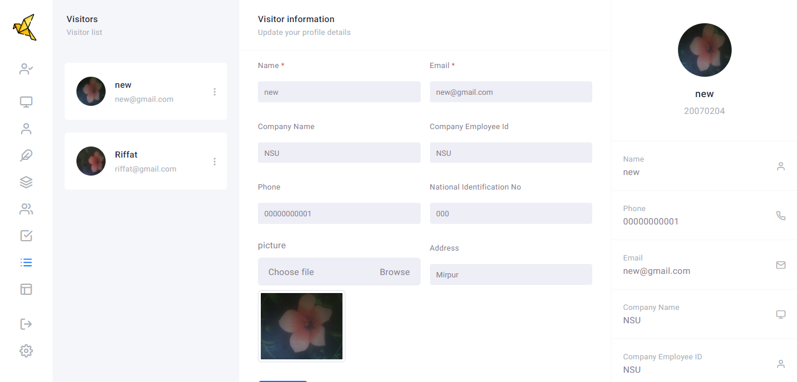Pre-register List and details
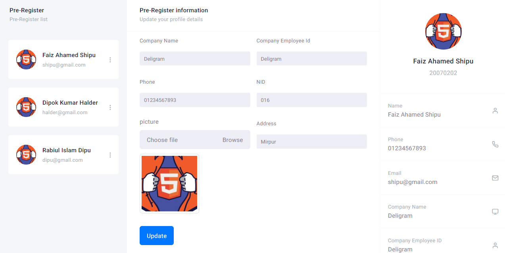General Setting
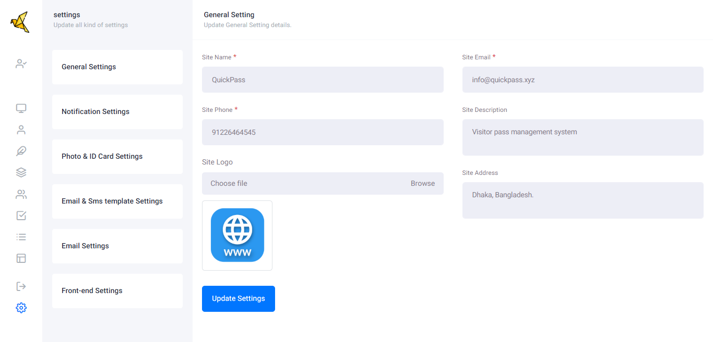Notification Setting
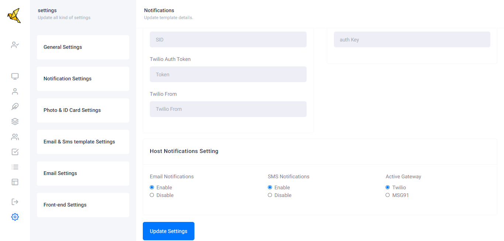Photo & ID Card Setting
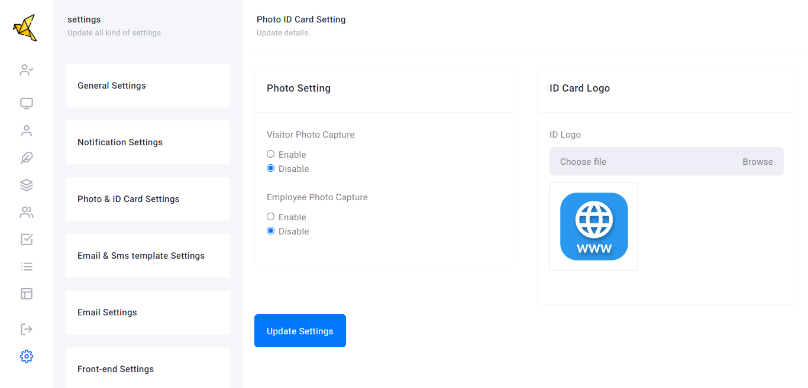Email & Sms template Setting

Email Setting
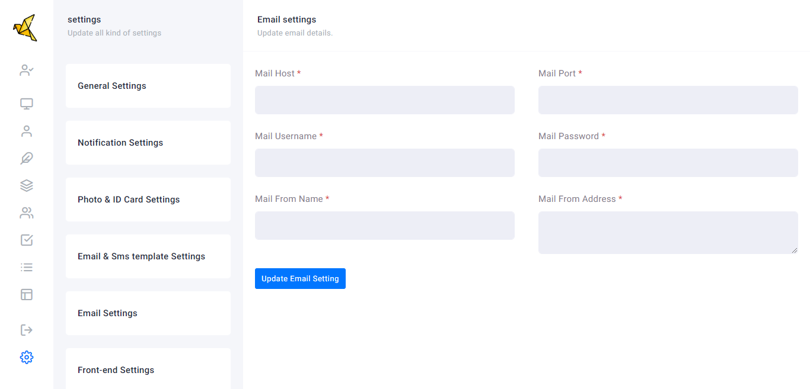Front-end settings - enable/disable
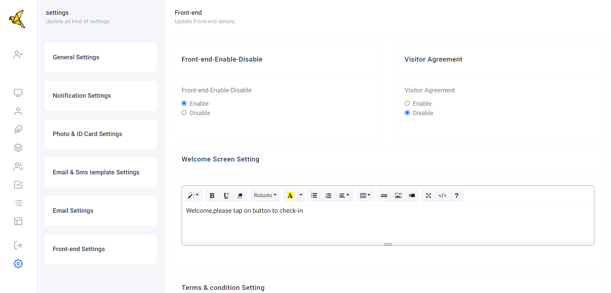SMTP
What is SMTP?Short for Simple Mail Transfer Protocol, a protocol for sending e-mail messages between servers. Most e-mail systems that send mail over the Internet use SMTP to send messages from one server to another; the messages can then be retrieved with an e-mail client using either POP or IMAP. In addition, SMTP is generally used to send messages from a mail client to a mail server. This is why you need to specify both the POP or IMAP server and the SMTP server when you configure your e-mail application.
In short it used to send emails to your site users..!! You can use any SMTP service provider.- Your own hosting SMTP server
- Gmail, Yahoo or some other email provider
Own SMTP Server
Using your own or some SMTP server Admin panel setup- Go to your Admin panel -> Setup -> General Settings -> Mail
- Set 'Mail driver', 'Mail host', 'Mail port', 'Mail encryption', 'Mail username' and 'Mail password'
- And save your changes.
/.env file setup
- Login to your FTP account.
- Open and Edit
/.envfile. - Copy and paste your server smtp details in the file.
MAIL_DRIVER=smtp
MAIL_HOST=your-mail-host
MAIL_PORT=your-mail-port
MAIL_USERNAME=your-mail-username
MAIL_PASSWORD=your-mail-password
MAIL_ENCRYPTION=your-mail-encryption
- Replace
your-mail-host,your-mail-port,your-mail-username,your-mail-passwordandyour-mail-encryption. - Save and Upload the file
- You are done.
/.env file settings override those of the admin panel.
SMS APIs
How to set up?
- Admin panel -> Setup -> General Settings -> Notification -> activate default SMS API, Set gateway information and save.
- You can use both Africa's Talking API or TWILIO as your SMS provider API:
TWILIO
TWILIO - https://www.twilio.com
Admin panel setup- Go to your Admin panel -> Setup -> Notification's Settings ->
- Set 'Twilio Account SID', 'Twilio Auth Token' and 'Twilio From'
- And save your changes.
TWILIO_ACCOUNT_SID=your-twilio-account-sid
TWILIO_AUTH_TOKEN=your-auth-token
TWILIO_FROM=your-sender-number
Others SMS Configurations
Now, go to your Admin panel :
- Admin panel -> Setup -> Notification Settings
You are done.
Front-end register process
How To Contact Us?